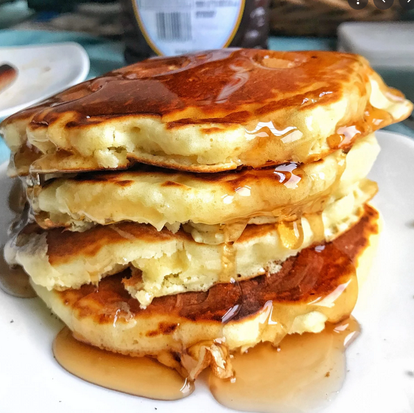

Old Fashioned Pancakes

Prep: 5 mins
Cook: 15 mins
Total: 20 mins
Servings: 8
Yield: 8 servings
Nutrition Facts
Per Serving: 158 calories;protein 4.5g; carbohydrates 21.7g; fat 5.9g; cholesterol 37.7mg; sodium 503.6mg.
Ingredients:
- 1 ½ cups all-purpose flour
- 3 ½ teaspoons baking powder
- 1 teaspoon salt
- 1 tablespoon white sugar
- 1 ¼ cups milk
- 1 egg
- 3 tablespoons butter, melted
Steps:
- In a large bowl, sift together the flour, baking powder, salt and sugar. Make a well in the center and pour in the milk, egg and melted butter; mix until smooth.
- Heat a lightly oiled griddle or frying pan over medium-high heat. Pour or scoop the batter onto the griddle, using approximately 1/4 cup for each pancake. Brown on both sides and serve hot.
Return to main menu